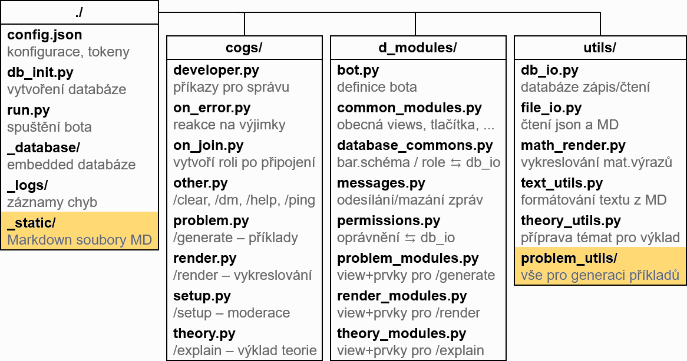
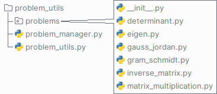

Struktura projektu
Tato sekce stručně popisuje strukturu souborů projektu LingeBot.
Při spuštění bota jste se již seznámili se soubory config.json, db_init.py a run.py. Další Python moduly, které zajišťují funkčnost bota, se nachází v adresářích cogs/, d_modules/ a utils/. Zbylé adresáře, ve kterých se nachází „nepythonovské“ soubory, se nazývají _database/, _logs/ a _static/.
Pro rozšíření bota o vlastní teoretické materiály a kategorie příkladů je důležitý adresář _static/ a podadresář utils/problem_utils/:

cogs/
Adresář cogs/ obsahuje moduly, které zajišťují převážně obsluhu podpůrných příkazů. Na zadané příkazy se sice reaguje zde, obvykle je ale jejich obsluha předána do funkcí modulů v adresářích d_modules/ nebo rovnou utils/, kde se provede hlavní logika obsluhy.
d_modules/
Adresář d_modules/ obsahuje moduly závislé na platformě Discord. Nachází se zde funkce pro obsluhu uživatelských rozhraní jednotlivých příkazů, práci se zprávami, kontrolu oprávnění, ale i definici samotného bota.
utils/
Adresář utils/ obsahuje moduly nezávislé na platformě Discord. Probíhá zde práce s databází a se soubory, vykreslování matematických výrazů a generace příkladů.
utils/problem_utils/
Podadresář utils/problem_utils/ obsahuje vše potřebné pro generaci příkladů. Nachází se zde balík problems (pod-podadresář), v němž každý modul reprezentuje jednu kategorii příkladů. Vedle tohoto balíku se nachází modul problem_manager.py, který pomáhá zajistit, aby se jednotlivé kategorie příkladů dostaly až do rozhraní ke koncovému uživateli, a modul problem_utils.py, který obsahuje společnou logiku pro více kategorií.

_database/
Adresář _database/ obsahuje embedded databázi SQLite, kde jsou uložena nastavená barevná schémata, identifikátory rolí LingeMod a nastavení oprávnění pro jednotlivé servery.
_logs/
Adresář _logs/ obsahuje logovací soubory. Pokud při běhu bota někde nastane chyba, tak by zde měla být zaznamenána.
_static/
Adresář _static/ obsahuje Markdown soubory s příponou .MD (písmena musí být velká).
V podadresáři _static/problems/ se nachází Markdown soubory s tutoriály pro výpočet jednotlivých kategorií příkladů.
V podadresáři _static/theory/ se nachází Markdown soubory obsahující jednotlivá témata pro výklad teorie.